무선설비기사 (2006-05-14 기출문제)
1과목: 디지털 전자회로
1. 다음 그림과 같은 회로의 논리식은?
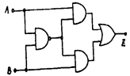
- Z = (A+B)AㆍB
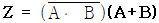
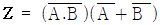
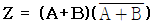
(정답률: 알수없음)
2. 트랜지스터 증폭기에서 바이어스(bias)에 대한 설명 중 가장 적합한 것은?
- 희망하는 동작모드를 만들기 위해 트랜지스터 또는 소자에 직류전압을 인가하는 것을 말 한다.
- 전류 캐리어로 자유전자와 정공에 의해 특성화 되는 것을 말 한다.
- 베이스와 컬렉터 사이의 전류이득을 말한다.
- 트랜지스터가 도통되지 않았을 때의 상태를 말한다.
(정답률: 알수없음)

3. 그림과 같은 브리지 정류회로에 관한 설명 중 틀린 것은?
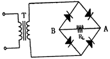
- RL에는 A에서 B쪽으로 전류가 흐른다.
- RL에서 흐르는 전류는 전파 정류된 파형이다.
- 다이오드에 걸리는 역방향 전압의 최대치는 T의 2차 전압의 최대치의 2배에 가깝다.
- RL에 걸리는 전압의 최대치는 T의 2차 전압의 최대치에 가깝다.
(정답률: 알수없음)
4. 가변 직류전원에 의해 주파수 가변이 가능한 발진기는?
- 수정발진기
- VCD
- 암스트롱 발진기
- 피에조디바이스
(정답률: 알수없음)
5. ROM의 블록(block)선도이다. 입력 X2, X1, X0가 101일 때 데이터 D3, D2, D1, D0 출력으로 맞는 것은?
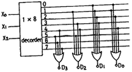
- 0101
- 0011
- 1100
- 1010
(정답률: 알수없음)
6. 다음 회로에서 Q1의 역할은? (단, Q1과 Q2의 전기적 특성은 같다.)
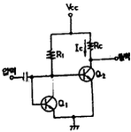
- 발진 작용
- 은도보상 작용
- 높은 주파수의 신호를 제거시킴
- 입력신호 증폭 작용
(정답률: 알수없음)
7. 이상적인 연산증폭 회로의 입력단 V1 에서 본 입력 임피던스는?
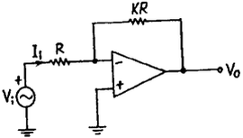
- R
- R(1+K)
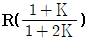
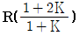
(정답률: 알수없음)
8. 그림과 같이 연산증폭기를 사용한 위인(Wien) 브리지에서 O 발진회로의 발진주파수 f는?
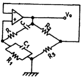
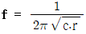
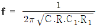
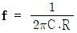
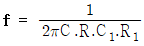
(정답률: 알수없음)
9. 다음 그림과 같은 호로의 출력은? (정확한 보기 내용을 아시는분께서는 오류 신고를 통하여 내용 작성부탁 드립니다. 정답은 3번입니다.)
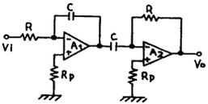
- 0
- 복원중 (정확한 보기 내용을 아시는분께서는 오류 신고를 통하여 내용 작성부탁 드립니다. 정답은 3번입니다.)
- 복원중 (정확한 보기 내용을 아시는분께서는 오류 신고를 통하여 내용 작성부탁 드립니다. 정답은 3번입니다.)
- 복원중 (정확한 보기 내용을 아시는분께서는 오류 신고를 통하여 내용 작성부탁 드립니다. 정답은 3번입니다.)
(정답률: 알수없음)
10. JK 플립플롭의 티리거 입력과 상태전환 조건을 설명한 것 중 옳지 않은 것은?
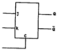
- J=0, K=0일 때는 반전치 않는다.
- J=0, K=1일 때는 Q가 0으로 된다.
- J=1, K=0일 때는 Q가 1로 된다.
- J=1, K=0일 때는 반전된다.
(정답률: 알수없음)
11. 전력 Pc[W]의 반송파를 정현파로 100[%] 진폭변조시켜을 때 평균전력 P[W]는?
- P = 1.5Pc
- P = 2Pc
- P = 2.5Pc
- P = 3Pc
(정답률: 알수없음)
12. 비안정 멀티바이브레이터에 대한 설명으로 가장 관계 없는 것은?
- 출력파형에 많은 고조파가 포함되어 있다.
- 발진주파수는 회로의 시정에 의해서 결정된다.
- 동작전압 범위 내에서 전원 전압의 변동은 발 진주파수에 큰 영향을 주지 않는다.
- 두개의 안정된 상태를 갖는다.
(정답률: 알수없음)
13. 그림과 같은 회로의 입력으로 스텝 전압을 인가할 때 출력전압(V0)의 파형은? (단, A는 이상적인 연산 증폭기이다.)
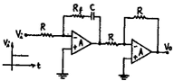
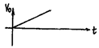
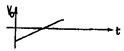
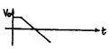
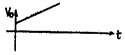
(정답률: 알수없음)
14. 정논리의 경우 그림과 같은 회로는? (단, LSD는 Level - Shift Diode)
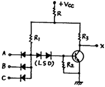
- AND
- OR
- NAND
- NOR
(정답률: 알수없음)
15. 카운터(counter)를 이용하여 켄베어 벨트를 통과하는 생산품의 갯수를 파악하려고 한다. 최대 500개의 생산품을 카운트하기 위한 카운터를 플립-플롭(flip-flop)을 이용하여 제작할 때 최소한 몇 개의 플립-플롭이 필요한가.?
- 5
- 7
- 9
- 11
(정답률: 알수없음)
16. 논리식 x1y1z+x1y z+x y1를 간호화 하면?
- x1z+x y 1
- x z1+x y1
- x1z1+xy
- x1z+x y
(정답률: 알수없음)
17. 다음 중 프리엠퍼시스(pre-emphasis) 회로와 관련이 있는 것은?
- 저역통과필터
- 고역통과필터
- 대역통과필터
- 대역저지필터
(정답률: 알수없음)
18. 그림과 같은 슬라이스(slice) 회로의 출력파형은? (단, 입력은 Esinwt 이다.)
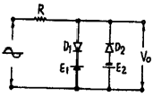
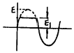
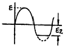
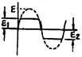
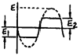
(정답률: 알수없음)
19. 평형 변조기에 반송파 cosωct와 신호파cosωmt을 입력시켰을 때 출력에 나타나는 파형은?
- (1+cosωmt)cosωct
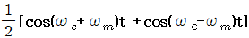
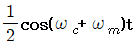
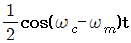
(정답률: 알수없음)
20. 85 bit의 두 2진수를 병렬가산하기 위해서는 최소한 몇 개의 반가산기와 전가산기가 필요한가?
- 반가산기: 1개, 전가산기: 34개
- 반가산기: 2개, 전가산기: 33개
- 전가산기: 1개, 반가산기: 34개
- 전가산기: 2개, 반가산기: 33개
(정답률: 알수없음)
2과목: 무선통신 기기
21. 다음 중 INMARSAT 시스템과 관계 없는 것은?
- 해안지구국
- 선박지구국
- 통신망관리국
- 인텔세트위성
(정답률: 알수없음)
22. Diagonal clipping에 대한 설명이 맞는 것은?
- 시정수가 과도하게 커서 검파출력이 포락선의 화를 따르지 못해 발생하는 왜곡 현상
- Fading 등에 의한 수신 level과 출력 변동으로 해 통신의 질이 저하되는 현상
- 신호파 전류의 진폭이 직류 성분전류보다 커져서 포락선 밑부분이 잘리는 왜곡현상
- 단파의 원거리 통신에 있어서 fading으로 인한 진폭과 파형이 변형되는 현상
(정답률: 알수없음)
23. 잡음지수에 대한 설명 중 틀린 것은?
- 무잡음 이상증폭기의 잡음지수는 1이다.
- 실제 증폭기의 잡음지수는 1보다 크다.
- 증폭기의 입.출력단에서의 잡음지수=
 이다.
이다. - 다단 증폭기의 종합 잡음지수는 각단 잡음지수의 합이다.
(정답률: 알수없음)
24. 정현파를 단상 전파정류했을 때 출력전압의 실효치는 약 얼마인가?
- 최대치의 0.5배
- 최대치의 0.707배
- 최대치의 1배
- 최대치의 2배
(정답률: 알수없음)
25. 오실로스코프에 그림과 같은 파형을 얻었다. 다음 중 옳지 않은 것은?
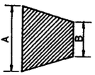
- 송신기의 변조도를 측정하는 방법 중의 하나이다.
- 수직축에는 피변조파, 수평축에는 톱날파를 인가한 경우이다.
- 변조도는
 로서 구해진다.
로서 구해진다. - 위상이 일치되어야 정확한 사다리꼴 얻어진다.
(정답률: 알수없음)
26. 다음은 아테나의 실효저항 측정회로이다. 스위치 S를 닫고 희망 주파수 f에 동조시킬 때 공중선 전류계 A2의 지시를 I1이라고 한다. 다음에 S를 열고 A2의 지시를 I2 라고 할 때 실효정항 R는 얼마인가?
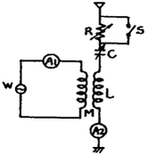
- Re = I1R-I1
- Re = (I1-R)I2
- Re = (I2-I1)R
- Re =

(정답률: 알수없음)
27. 직접확산 통신방식에서 중요한 파라미터인 처리이득(processing gain)의 정으로 맞는 것은?
- 확산대역폭/신호대역폭
- 확산대역폭/채널대역폭
- 확산대역폭/변조대역폭
- 확산대역폭/잡음대역폭
(정답률: 알수없음)
28. AM 송신기가 전체 전력60[W]를 안테나에 공급할 때 변조율이 100%라고 가정한다면, 반송파와 상측파대에 포함되는 각각의 전력은?
- 30[W], 10[W]
- 30[W], 20[W]
- 40[W], 20[W]
- 40[W], 10[W]
(정답률: 알수없음)
29. 거수형 주파수 측정장치에서 Reset 회로의 역할은?
- Gate 시간 조정
- 입력신호레벨 조정
- 계수부를 “0”으로 복귀
- 출력부의 파형 조정
(정답률: 알수없음)
30. 수정 발진회로에서 수정진동자의 전기적 직렬공진 주파수를 fs, 병렬공진 주파수를 fp라 하면 안정한 발진을 하기위한 동작 출력 주파수 fo의 범위는?
- fs ＜ fo ＞ fp
- fs＜ fo ＜ fp
- fs ＞ fo ＞ fp
- fo = fs
(정답률: 알수없음)
31. 디지털 변조 방식이 아닌 것은?
- VSB
- PSK
- QAM
- PCM
(정답률: 알수없음)
32. 반송파 20[㎒]를 신호파 10[㎒]로 FM 변조 할 경우 주파수 변조지수와 점유 주파수 대역폭은 각각 얼마인가?
- 4, 180[㎑]
- 8, 180[㎑]
- 4, 200[㎑]
- 8, 200[㎑]
(정답률: 알수없음)
33. 다음의 일반적인 수신기 구성회로 중 수신안테나로부터 가장 멀리 떨어져 있는 회로는?
- 입력정합회로
- 전치증폭기
- 대역총과필터
- 검파기
(정답률: 알수없음)
34. 링 변조기(Ring modulator)의 설명 중 틀린 것은?
- 다이오드는 반송파 극성에 따른 switch 구실을 한다.
- 반송파와 신호파가 각각 입력단에 가해질 때 출력이 나온다.
- 입력단에 반송파만 가할 때 변조된 출력이 나온다.
- 입력단에 신호파만이 가해질 때에는 변조된 출력이 나오지 않는다.
(정답률: 알수없음)
35. 1[㎾]의 송신기 전력이 전송되다가 송신출력이 3[dB] 떨어졌다. 이때의 전력은 약 몇[㎾]인가?
- 1
- 0.8
- 0.5
- 0.3
(정답률: 알수없음)
36. SSB 신호를 발생하는 방법에 해당되지 않는 것은?
- 포스터-실리법
- 위상천이 방법
- 필터법
- Weaver법
(정답률: 알수없음)
37. 전계강도 측정에 관한 설명으로 거리가 먼 것은?
- 전계강도 측정기는 내부 잡음에 의한 오차가 생길 수 있다.
- 전계강도는 송신기 출력의 제곱에 비례한다.
- 전계강도 측정 시 주위에 전화선이나 배전선 등이 있을 때는 정확한 측정이 곤란하다
- 전계강도는 ㎶/m로도 표시된다.
(정답률: 알수없음)
38. 수퍼 헤테로다인 수신기의 중간 주파수 (1F)를 선정할 때 고려되는 사항으로 틀린 것은?
- 안정도 : 중간주파수(1F)가 낮은 것이 좋다.
- 지연특성 : 중간주파수(1F)가 높을수록 좋다.
- 근접주파수 선택도 : 중간주파수(1F)가 높을수록 좋다.
- 영상주파수 선택도 : 중간주파수(1F)가 높을수록 좋다.
(정답률: 알수없음)
39. 통신위성을 통신시스템과 지원(공용)시스템으로 구분할 때 지원시스템에 포함되지 않는 것은?
- 전원계
- 자세제어계
- 감시제어계
- 추진계
(정답률: 알수없음)
40. 스미스선도(Smith chart)를 이용하여 구할 수 없는 값은?
- 미지역율
- 미지임피던스
- 정재파비
- 반사계수
(정답률: 알수없음)
3과목: 안테나 공학
41. 태양의 폭발에 의해 방출된 자외선이 E층 또는 D층의 전자밀도를 증가시켜 통신을 불가능하게 만드는 현상은?
- 델린저 현상(Dellinger effect)
- 자기폭풍(Magnetic storm)
- 룩셈부르크 현상(Luxemburg effect)
- 페이딩 현상(Fading effect)
(정답률: 알수없음)
42. 차단 파장 λc = 10[㎝]인 구형 도파관에 6,000[㎒]의 전파를 전송할 때 관내 파장 λg는 약 얼마인가?
- 10.8[㎝]
- 7.8[㎝]
- 6.8[㎝]
- 5.8[㎝]
(정답률: 알수없음)
43. 그림에 표시된 구형도파관에 TE10파가 진행할 때 차단 주파수는?
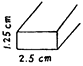
- 24,000[㎒]
- 12,000[㎒]
- 9,600[㎒]
- 6,000[㎒]
(정답률: 알수없음)
44. 300[㎒]용 반파장 다이폴 안테나에서 안테나 도선의 직경이 5[㎝]일 때 단축율은 얼마인가?
- 7.5 [%]
- 8.5[%]
- 9.8[%]
- 10.8[%]
(정답률: 알수없음)
45. 그림과 같이 안테나 도선의 굵기가 동일한 폴디드 다이폴 안테나(folded dipole antenna)의 급전점 임피던스는 약 얼마인가?
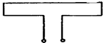
- 50[Ω]
- 75[Ω]
- 150[Ω]
- 300[Ω]
(정답률: 알수없음)
46. 모든 방향으로 균일하게 전하를 복사하는 안테나는?
- 파라보라(Parabola) 안테나
- 카세그레인(Cassegrain)안테나
- 아이 소트로픽(Isotropic)안테나
- 인라인(In-line)안테나
(정답률: 알수없음)
47. 파라보라 안테나(Parabola antenna)의 특성 중 옳지 않은 것은?
- 이득은 안테나의 개구면적에 비례한다.
- 같은 크기에서는 파장이 짧을수록 이득은 크다.
- 지향성은 예민하나 방향조정이 안된다.
- 반사면을 망으로 하거나 도전도료를 칠하여도 특성에는 커다란 변동이 없다.
(정답률: 알수없음)
48. 제 1 Fresnel Zone의 반경과 파장과의 관계는?
- 파장의 평방근에 반비례한다.
- 파장의 평방근에 비례한다.
- 파장의 자승에 반비례한다.
- 파장의 자승에 비례한다.
(정답률: 알수없음)
49. 안테나 도선의 표피효율과에 의한 고주파 저항 및 연장 코일 등의 손실저항은?
- 접지저항
- 도체저항
- 유전체손
- 코로나손
(정답률: 알수없음)
50. 그림과 같은 방향성 결합기가 있다. 입력단 A에 1[㎽]의 전력이 공급되고 부도파관 출력단 C에 0.⑤ [㎽]의 출력이 나타날 때, 이 방향성 결합기의 결합도는?
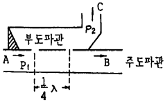
- 0[dB]
- 1.3[dB]
- 0.13[dB]
- 0.013[dB]
(정답률: 알수없음)
51. 단파의 전파특성 중 주.야간과 주파수의 관계에 대한 설명이 옳은 것은?
- 주.야간에 높은 주파수를 사용
- 주.야간에 낮은 주파수를 사용
- 주간에 낮은 주파수, 야간에 높은 주파수를 사용
- 주간에 높은 주파수, 야간에 낮은 주파수를 사용
(정답률: 알수없음)
52. 선박 레이더용으로 사용하기에 가장 적합한 안테나는?
- 루프(loop) 안테나
- 애드콕(adcock) 안테나
- 헤리컬(helical) 안테나
- 슬롯 어레이(slot array) 안테나
(정답률: 알수없음)
53. 다음 중 광대역 텔레비전 수신용 안테나가 아닌 것은?
- Uline 안테나
- In line 안테나
- Conical 안테나
- 수퍼턴스타일 안테나
(정답률: 알수없음)
54. 중위도 지방(한국)에서는 태양폭발이 관측된 후 얼마 후에 자기장이 발생되는가?
- 수 분후
- 수십 분후
- 수 시간~수십 시간 후
- 수일~수십 일 후
(정답률: 알수없음)
55. 급전선과 안테나의 임피던스 정합 방법으로 사용되지 않는 것은?
 임피던스 변환기
임피던스 변환기- 스터브 튜너(stub tuner)
- 다이플렉서(diplexer)
- 테이퍼 선로(tapered line)
(정답률: 알수없음)
56. 다음은 지표파에 대한 설명이다. 잘못된 것은?
- 전파는 평지에서 가장 잘 전파한다.
- 유전율이 작을수록 감쇠가 적어진다.
- 수평편파가 수직편파보다 감쇠가 크다.
- 장. 중파대에서 감쇠가 적다.
(정답률: 알수없음)
57. 다음 중 8자형 지향특성을 갖는 안테나는?
- Loop antenna
- Yagi antenna
- Wave antenna
- Rhombic antenna
(정답률: 알수없음)
58. 루프 안테나를 방향탐지에 사용할 경우 180° 불확정이 발생하여 전파의 도래방향을 결정할 수 없다.
- 수직접지 안테나와 루프 안테나를 조합한 안테나
- 비버리지 안테나와 루프 안테나를 조합한 안테나
- 애드콕 안테나와 루프 안테나를 조합한 안테나
- 베르니토시 안테나와 루프 안테나를 조합한 안테나
(정답률: 알수없음)
59. 전파의 대류권 전파에 있어서 라디오 덕트의 생성 원인이 아닌 것은?
- 전선에 의한 덕트
- 주간 냉각에 의한 덕트
- 대양상의 덕트
- 이류성 덕트
(정답률: 알수없음)
60. 주파수 1[㎒]에 대한 전기적 미소 dipole의 복사전계가 정전계보다 이론상 커지는 것은 미소 dipole 안테나에서 얼마만큼 떨어진 곳에서 부터인가?
- 약 50[m]
- 약 100[m]
- 약 150[m]
- 약 300[m]
(정답률: 알수없음)
4과목: 무선통신 시스템
61. 생두전력 350㎾], 평균전력 280[W]의 레이더에서 펄스 반복주파수가 1[㎑]일 때 펄스폭[㎲]은?
- 0.4[㎲]
- 0.5[㎲]
- 0.8[㎲]
- 1.0[㎲]
(정답률: 알수없음)
62. 다음 중 CDMA 방식에서 역방향 채널인 것은?
- 액세스 채널
- 동기 채널
- pilot 채널
- 호출 채널
(정답률: 알수없음)
63. 다음 중 단파통신의 페이딩을 줄이는 방법이 아닌 것은?
- 주파수 합성법을 쓴다.
- 지향성이 날카로운 안테나를 쓴다.
- 수신기에 AGC를 사용한다.
- 송신 주파수를 높인다.
(정답률: 알수없음)
64. N 부호 발생기의 이진 출력에 의해 선택된 특정 time slot 동안 데이터로 변조된 반송파를 송출하는 방식의 확산대역통신 방식은?
- DS
- FH
- TH
- CM
(정답률: 알수없음)
65. 우리나라 아날로그 컬러TV 방송에서 한 채널의 대역폭은?
- 6[㎒]
- 8.2[㎒]
- 3.58[㎒]
- 4.2[㎒]
(정답률: 알수없음)
66. 위성회선의 다중접속방법이 아닌 것은?
- CSMA
- SDMA
- FDMA
- TDMA
(정답률: 알수없음)
67. 전력 증폭기의 직류공급이 14[V], 600[㎃]이고 능률은 60[%]일 때 부하에서의 출력 전력은?
- 0.7[W]
- 2.88[W]
- 4.8[W]
- 5.04[W]
(정답률: 알수없음)
68. 위성통신시스템 설계시 고려사항이 아닌 것은?
- 전파손실
- 전송지연
- 주파수변조
- 위성월식
(정답률: 알수없음)
69. FDM의 다중화 방식에 적용되지 않는 변조방식은?
- 진폭변조
- 펄스변조
- 주파수변조
- 위상변조
(정답률: 알수없음)
70. 여파기에 있어서 요망되는 특성이 아닌 것은?
- 감쇠대역의 감쇠량은 될 수 있는 대로 클 것
- 차단특성이 예리할 것
- 통과대역에 있어서의 영상 임피던스의 편차가 클 것
- 통과대역의 손실이 될 수 있는 대로 작을 것
(정답률: 알수없음)
71. 다음 중 주파수 체배기와 관계 없는 것은?
- PLL외로에서도 이용된다.
- 수정발진기의 고유주파수 이상의 주파수를 얻기 위해서 이용된다.
- 선형회로로 동작된다.
- 고조파 성분을 이용한다.
(정답률: 알수없음)
72. 양측파대(DSB)로부터 단일측파대(SSB)를 얻기 위하여 사용하는 여파기(filter)는?
- 저역여파기
- 고역여파기
- 대역통과여파기
- 대역제거여파기
(정답률: 알수없음)
73. 전파의 창(radio window)의 범위를 결정하는 요소가 아닌 것은?
- 전리층의 영향
- 도플러 효과의 영향
- 대류권의 영향
- 대기 잡음의 영향
(정답률: 알수없음)
74. 다수의 통화로군을 일괄하여 변조하는 것을 무엇이라고 하는가?
- 통화로 변조
- 다수변조
- 군변조
- 과변조
(정답률: 알수없음)
75. 송신기에서 발사되는 고조파의 복사를 적게 하기 위한 방법으로 가장 접합한 것은?
- 송신기 종단 동조회로의 Q를 될 수 있는 대로 낮게 한다.
- 송신기 종단과 공중선 사이에 결합회로를 설치한다.
- 송신기 종단과 공중선 사이에 저조파 여파기를 삽입 한다.
- 저조파에 대한 트랩을 급전선에 설치한다.
(정답률: 알수없음)
76. 바이크로파 통신시스템의 전파방해를 경감하기 위한 대책으로 옳지 않은 것은?
- 안테나의 지향성 개선
- 적절한 차폐물의 이용
- 항공기 이착륙이 빈번하지 않는 곳 선정
- 해변, 호수 등의 반사파 지역 선정
(정답률: 알수없음)
77. 정지궤도위성에 대한 설명으로 적합하지 않은 것은?
- 지구의 자전과 같은 방향의 주기로 지구주위를 회전한다.
- 적도 상공 약 36000[㎞]의 고도를 일정하게 유지한다.
- 지구에서 바라볼 때 위치가 계속 변한다.
- 3개의 위성으로 극지방을 제외한 전세계 통신을 커버할 수 있다.
(정답률: 알수없음)
78. 다음 중 위성 통신의 장점이 아닌 것은?
- 회선 구성의 유연성
- 내재해성
- 광역성, 다원 접속성
- 근거리통신에 대한 경제성
(정답률: 알수없음)
79. 이동통신에서 송.수신주파수 간에 이격을 두는 방식은?
- FM
- FDD
- FDMA
- TDMA
(정답률: 알수없음)
80. 송신기의 주파수 특성을 개선하려 할 때, 다음 중 가장 적합한 것은?
- 동조회로의 Q를 크게 한다.
- 바이어스 동작점을 정확하게 한다.
- 증폭기를 부궤환 회로로 한다.
- 전원에 포함된 맥동분을 적게 한다.
(정답률: 알수없음)
5과목: 전자계산기 일반 및 무선설비기준
81. Formatting 한 1.2MB의 디스켓에 최대 몇 개의 영문자를 저장할 수 있는가? (단, 1.2MB 모두 영문자 저장에 사용)
- 약 655,000
- 약 965000
- 약 1,024,000
- 약 1,258,000
(정답률: 알수없음)
82. 프로그램 카운터와 명령의 주소부분을 더해 유효 주소로 결정하는 주소지정방식은?
- Base Addressing
- Index Addressing
- Immediate Addressing
- Relative Addressing
(정답률: 알수없음)
83. 언어프로세서 중 object file을 생성하지 않고 번역 즉시 실행하는 것은?
- interpreter
- assembler
- debugger
- compiler
(정답률: 알수없음)
84. 기억장치에 기억되어 있는 정보의 내용 또는 그의 일부에 의해서 기억되어 있는 위치에 접근하여 정보를 읽어내는 장치는?
- 연상기억장치(Assoclative Memory)
- 가상기억장치(Virtual Memory)
- 캐시 메모리(Cache Memory)
- 보조기억장치(Auxiliary Memory)
(정답률: 알수없음)
85. EBCDIC 코드와 가장 관계 깊은 코드는?
- 2421 코드
- 그레이 코드
- 2-out of-5 코드
- 8421코드
(정답률: 알수없음)
86. 2진수 11110을 1의 보수 및 2의 보수를 취하면?
- 1의 보수 = 00001, 2의 보수 = 00010
- 1의 보수 = 01101, 2의 보수 = 00010
- 1의 보수 = 11001, 2의 보수 = 00110
- 1의 보수 = 00010, 2의 보수 = 00001
(정답률: 알수없음)
87. 운영체제의 구성중 제어프로그램에 해당하지 않는 것은?
- 감시 프로그램
- 서비스 프로그램
- 데이터관리 프로그램
- 작업관리 프로그램
(정답률: 알수없음)
88. 다음 중에서 코드의 역할이라고 할 수 없는 것은?
- 자료에 대한 분류, 조합의 기능이 있다.
- 실행시간을 단축한다.
- 개개의 데이터를 구분하기가 용이하다.
- 자료처리를 표준화, 단순화하는데 기여 한다.
(정답률: 알수없음)
89. 마이크로프로세서의 전송명령 없이 데이터를 입출력장치에서 메모리로 전송할 수 있는 것은?
- DMA
- Interrupt
- FIFO
- SCAN
(정답률: 알수없음)
90. 인터럽트 발생원인이 아닌 것은?
- 정전
- 조작자의 의도적인조작
- 0(zero)으로 나누었을 때
- 임의의 부프로그램에 대한 호출
(정답률: 알수없음)
91. 송신설비의 공중선 전력을 규격전력으로 표시하지 않아도 되는 것은?
- 라디오 부이의 송신설비
- 비상위치 지시용 무선표지 설비
- 실험국 송신설비
- 아마추어국 송신설비
(정답률: 알수없음)
92. 공중선전력 10와트를 초과하는 무선설비에 사용하는 전원회로에서 갖추어야 할 보호장치는?
- 퓨즈 또는 자동차단기
- 선택호출장치 또는 식별장치
- 퓨즈 또는 선택호출장치
- 자동차단기 또는 식별장치
(정답률: 알수없음)
93. 공중선계의 충족조건에 해당되지 아니한 것은?
- 공중선의 이득이 높을 것
- 정합은 신호의 반사손실이 최소화되도록 할것
- 주복사각도의 폭이 클 것
- 지향성은 복사되는 전력이 목표하는 방향을 벗어나지 아니하도록 안정적일 것
(정답률: 알수없음)
94. 무선설비의 안전시설기준에서 정하는 발전기, 정류기 등에 인입되는 고압전기는 절연차폐체 내에 수용하여야 한다. 다음 중 고압전기에 포함되는 것은?
- 220 볼트를 초과하는 교류전압
- 220 볼트를 초과하는 직류전압
- 500 볼트를 초과하는 교류전압
- 750 볼트를 초과하는 직류전압
(정답률: 알수없음)
95. 전파자원의 공평하고 효율적인 이용을 촉진하기 위한 필요한 조치사항이 아닌 것은?
- 주파수 분배의 변경
- 새로운 기술방식으로의 전환
- 주파수의 사용 자율화 유도
- 주파수의 회수 또는 주파수 재배치
(정답률: 알수없음)
96. 다음 중 전파법시행령에 의하여 준공검사를 받지 아니하고 운영할 수 있는 무선국이 아닌 것은?
- 30와트 미만의 무선설비를 시설하는 어선의 무선국
- 형식등록을 한 무선설비를 사용하는 아마추어국
- 국가안보 또는 대통령 경호를 위하여 개설하는 무선국
- 정부가 개설하여 상시 운용하는 무선국
(정답률: 알수없음)
97. 전파의 형식이 J3E인 텔레비전방송을 하는 송신설비의 점유주파수대폭의 허용치는?
- 1㎑
- 3㎑
- 6㎑
- 10㎑
(정답률: 알수없음)
98. 전자파 장해기기의 전자파 장해 방지기준은 누가 정하여 고시하는가?
- 전파연구소장
- 국가정보원장
- 과학기술부장관
- 정보통신부장관
(정답률: 알수없음)
99. 디지털 텔레비전 방송국의 송신설비에 대한 공중선전력의 허용편차로 맞는 것은?
- 상한:5%, 하한:10%
- 상한:10%, 하한:20%
- 상한:10%, 하한:5%
- 상한:5%, 하한:5%
(정답률: 알수없음)
100. 전파법의 규정에 의한 형식등록을 하여야 하는 무선설비의 기기가 아닌 것은?
- 무선호출국용 무선설비의 기기
- 간이무선국용 무선설비의 기기
- 생활무선국용 무선설비의 기기
- 위성비상위치지시용 무선표지설비의 기기
(정답률: 알수없음)